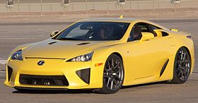

TOP
MIDDLE
BOTTOM
Verkefni 2.2
- texti 1
- texti 2
- texti 3
- texti 4
- texti 1
- texti 2
- texti 3
- texti 4
- texti 5
- texti 6
- texti 1
- texti 2
- texti 3
- texti 4
- texti 5
- texti 6
LEXUS LFA V10
Lexus LFA is a two-seat sports car manufactured by Lexus,the luxury car division of Toyota. It is the second model in the F marqueline of performance vehicles from Lexus, following the IS F. Three conceptversions were unveiled, each debuting at the North American InternationalAuto Show with the LF-A designation as part of the LF Series concept line.After beginning development in the early 2000s, the first LF-A concept premieredin 2005, followed in 2007 by a second concept with a more completely furnishedinterior and exterior. The third version of the LF-A, featuring a roadster bodystylepremiered in 2008. The production model, trademarked LFA, was unveiled at the Tokyo Motor Show in October 2009.
Mynd með lexus lfa
Lexus LFA is a two-seat sports car manufactured by Lexus,the luxury car division of Toyota. It is the second model in the F marqueline of performance vehicles from Lexus, following the IS F. Three conceptversions were unveiled, each debuting at the North American InternationalAuto Show with the LF-A designation as part of the LF Series concept line.After beginning development in the early 2000s, the first LF-A concept premieredin 2005, followed in 2007 by a second concept with a more completely furnishedinterior and exterior. The third version of the LF-A, featuring a roadster bodystylepremiered in 2008. The production model, trademarked LFA, was unveiled at the Tokyo Motor Show in October 2009.
Akio Toyoda, CEO of parent company Toyota Motor Corporation
saw the LFA as an opportunity to create a global icon for the Lexus brand,embodying Toyoda's idea that the ultimate Lexus should connect with its owner.
Flexbox row order
Flexbox column order